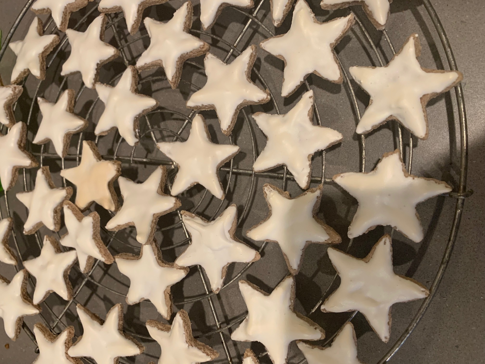

Cookies Recipe

Description
A beautiful Christmas cookie!
Ingredients
To make this, you’ll need:
- 2⅔ cups finely ground almonds
- 1 tablespoon ground cinnamon
- 1 teaspoon lemon zest
- ⅓ cup egg whites
- ⅛ teaspoon salt
- 2½ cups confectioners' sugar
- 1¾ teaspoons lemon juice
Steps
- Stir together the almonds, cinnamon, and lemon zest until combined.
- Beat the egg whites and salt until soft peaks form. Slowly sift in the confectioner's sugar, continuing to beat until the mixture is stiff.
Set aside 1/3 cup of the egg white mixture for the glaze. Fold in the almond mixture.
- Preheat oven to 325 degrees F (170 degrees C).
Line the cookie sheets with parchment paper.
- Roll the dough to 1/4 inch thickness on a surface that has been sprinkled with confectioners' sugar. Using a 2 1/2-inch star cookie cutter,
cut out the cookies and place them on the cookie sheets.
- To make the glaze, add the lemon juice to the reserved egg white mixture, stirring until smooth. Brush the tops of the cookies lightly with the glaze. (If the glaze starts to thicken,
add a few more drops of lemon juice.)
- Bake for 20 to 25 minutes. When done, they will be light brown and soft in the center.
Remove and cool on wire racks.